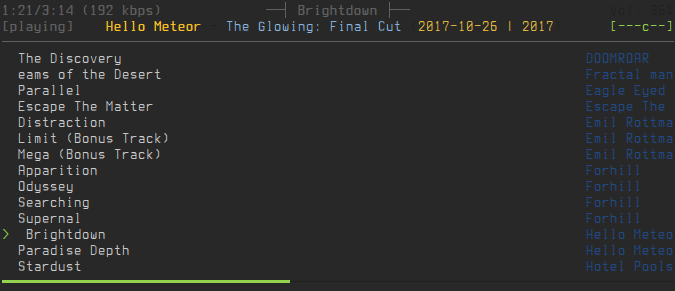
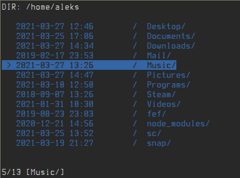

On this page you can find a list and an introduction to most of the software that I use on my Linux system. It includes text, picture and video editors, file managers, command line tools, and many other. I also added some guides and cheat sheets (for myself mostly when i forget things) for linux tools and programs.
*-----------------------------------------------------* | Costly tools don't produce better designs. | | | | Beware of vendor hype, industry dogma, and the aura | | of the price tag. Judge tools on their merits. | *-----------------------------------------------------* o o ^__^ o (oo)\_______ (__)\ )\/\ ||----w | || ||
Vim is a text editor that is upwards compatible to Vi. It can be used to edit all kinds of plain text. It is especially useful for editing programs. There are a lot of enhancements above Vi: multi level undo, multi windows and buffers, syntax highlighting, command line editing, filename completion, on-line help, visual selection, etc..
ESC = normal mode
Control v = select block
V = select line
c when selected to replace ESC to commit
gg = go to top
G = go to bottom
r = undo
R = replace
Control R = redo
:%s/[symbol to be replaced ]/[symbol to fill]/g eg. :s%/aa/bb/g
:%s/aaa/\ /g = replace with space
:norm I [text]= add to beginning
:norm A [text]= add to end
vap = select all paragraph
? = search
/ = search
{} = move through paragraphs
F6 = SpellChecker
ZZ = Quit saving changes
ZQ = quit witout saving
n = next search
:read ![command] = output command
6dd = delete 6 lines down
o = insert next line
,r = line numbers relative mode
space = fold code lines
,s = toggle syntax highlight= toggle undo tree
:later 10m = redo 10m
:earlier 10m = undo 10m
:u 2 = undo branch 2
numpad 00 = insert mode and or replace
numpad 1 = end of line
numpad 7 = start of line
split [file]= split window
vsplit = vertically
badd = addbuffer
bdel = delete buffer
vip = select whole paragraph
dip = cut/delete whole paragraph
VColor = for hex color
set nonu = turn off numberline
multiple cursors
/ = search word and press Return to select
Ctrl + n = to cycle next
c = replace
Ctrl + c = go back to one line
start:start multicursor and add a virtual cursor + selection on the match
next:add a new virtual cursor + selection on the next match
skip:skip the next match
prev:remove current virtual cursor + selection and go back on previous
select all:start muticursor and directly select all matches
You can now change the virtual cursors + selection with visual mode commands. For instance: c, s, I, A work without any issues.
You could also go to normal mode by pressing v and use normal commands there.
terminal multiplexer: it enables a number of terminals to be created, accessed, and controlled from a single screen. tmux may be detached from a screen and continue running in the background, then later reattached.
^a c = new window
^a , = rename window
^a w = list windows
^a % = split window vert
^a : = command eg (split-window)
^a " = split windows hor
^a o = switch window
^a t = time
qutebrowser is a keyboard-focused browser with a minimal GUI. It’s based on Python and Qt5 and is free software, licensed under the GPL. It was inspired by other browsers/addons like dwb and Vimperator/Pentadactyl.
Docker is a set of platform as a service products that use OS-level virtualization to deliver software in packages called containers. Containers are isolated from one another and bundle their own software, libraries and configuration files; they can communicate with each other through well-defined channels. docker is a client for interacting with the docker daemon through the CLI.
baobab is able to scan either specific folders (local and remote) or devices, in order to give the user a tree representation including each directory size or percentage in the branch. It also auto-detects any mounted/unmounted device. A graphical representation is also provided for any selected folder
fzf is a general-purpose command-line fuzzy finder.
ctrl+r = command history
ctrl+t = autocomplete
Tab = select multiple
ctrl+t .png$ = all png files etc
Files [PATH] Files (similar to :FZF)
GFiles [OPTS] Git files (git ls-files)
GFiles? Git files (git status)
Buffers Open buffers
Colors Color schemes
Ag [PATTERN] ag search result (ALT-A to select all, ALT-D to deselect all)
Rg [PATTERN] rg search result (ALT-A to select all, ALT-D to deselect all)
Lines [QUERY] Lines in loaded buffers
BLines [QUERY] Lines in the current buffer
Tags [QUERY] Tags in the project (ctags -R)
BTags [QUERY] Tags in the current buffer
Marks Marks
Windows Windows
Locate PATTERN locate command output
History v:oldfiles and open buffers
History: Command history
History/ Search history
Snippets Snippets (UltiSnips)
Commits Git commits (requires fugitive.vim)
BCommits Git commits for the current buffer
Commands Commands
Maps Normal mode mappings
Helptags Help tags 1
Filetypes File types
Git is a fast, scalable, distributed revision control system with an unusually rich command set that provides both high-level operations and full access to internals.
ranger is a console file manager with VI key bindings
cw = change name
A = rename
space = hightligh
yy = copy
pp = paste
dd = cut
dD = delete
: = run command
z = toggle
C-h = toggle hidden
V = create file
Z = zip
X = extract
S = open terminal in current directory
Nmap (“Network Mapper”) is an open source tool for network exploration and security auditing. It was designed to rapidly scan large networks, although it works fine against single hosts. Nmap uses raw IP packets in novel ways to determine what hosts are available on the network, what services (application name and version) those hosts are offering, what operating systems (and OS versions) they are running, what type of packet filters/firewalls are in use, and dozens of other characteristics. While Nmap is commonly used for security audits, many systems and network administrators find it useful for routine tasks such as network inventory, managing service upgrade schedules, and monitoring host or service uptime.
nmap -sL 192.168.0.0/24 - HOST NAMES
nmap 192.168.0.0/24 - DEFAULT PORT SCAN
nmap -sP 192.168.0.0/24 - PING SCAN SIMPLE
nmap -sS -sU -PN 192.168.0.164 - LONG INTENSE UDP TCP SCAN
nmap -sS -sU -PN -p 1-65535 192.168.0.164 - LONG TCP UDP SCAN ALL PORTS
nmap -T4 -A 192.168.0.0/24 - AGGRESSIVE SCAN
nmap -Pn -p80 --script ip-geolocation-* - FIND GEOLOCATION
ncmpcpp is an ncurses client for MPD (Music Player Daemon), inspired by ncmpc.
Different views
Partial list of views within ncmpcpp:
1 - Current playlist
2 - Filesystem browser
3 - DB search
4 - Library
5 - Playlist editor
6 - Tag editor (very powerful!)
7 - Output selector
8 - Music visualizer
= - Clock
F1 - Help
Other UI keys
q - Quit
f - Seek forward
b - Seek backward
\ - Switch between classic and alternative views
# - Display bitrate of file
i - Show song info
I - Show artist info (saved in $XDG_CONFIG_HOME/ncmpcpp/config/artists/ARTIST.txt)
L - Shuffle between available lyric databases
l - Retrieve song lyrics for current song Show/hide lyrics
p - Play/Pause
+ - Increase volume 2%
- - Decrease volume 2%
TShark is a network protocol analyzer. It lets you capture packet data from a live network, or read packets from a previously saved capture file, either printing a decoded form of those packets to the standard output or writing the packets to a file. TShark's native capture file format is pcapng format, which is also the format used by wireshark and various other tools.
Without any options set, TShark will work much like tcpdump. It will use the pcap library to capture traffic from the first available network interface and displays a summary line on the standard output for each received packet.
Mutt is a small but very powerful text based program for reading and sending electronic mail under unix operating systems, including support for color terminals, MIME, OpenPGP, and a threaded sorting mode.
nautilus is a file manager, designed for the GNOME 3 desktop.
compton is a compositor based on Dana Jansens' version of xcompmgr (which itself was written by Keith Packard). It includes some improvements over the original xcompmgr, like window frame opacity and inactive window transparency.
Kdenlive is a free and open-source video editing software based on the MLT Framework
GIMP is the GNU Image Manipulation Program. It is used to edit and manipulate images. It can load and save a
variety of image formats and can be used to convert between formats.
GIMP can also be used as a paint program. It features a set of drawing and painting tools such as airbrush,
clone, pencil, and paint brush. Painting and drawing tools can be applied to an image with a variety of paint
modes. It also offers an extensive array of selection tools like rectangle, ellipse, fuzzy select, bezier
select, intelligent scissors, and select by color.
In normal working mode, provides an interface which displays all pictures in the given DIRECTORY. From this interface, it is possible to set the X11 root pixmap either temporarily or set and store the picture, drawing mode, and X display for restoration later.
Neofetch is a CLI system information tool written in BASH. Neofetch displays information about your system next to an image, your OS logo, or any ASCII file of your choice
rxvt-unicode, is a colour vt102 terminal emulator intended as an xterm replacement for users who do not require features such as Tektronix 4014 emulation and toolkit-style configurability. As a result, rxvt-unicode uses much less swap space. A significant advantage on a machine serving many X sessions.
minicom is a communication program which somewhat resembles the shareware program TELIX but is free with source code and runs under most Unices. Features include dialing directory with auto-redial, support for UUCP-style lock files on serial devices, a separate script language interpreter, capture to file, multiple users with individual configurations, and more.
Serial connect
minicom -b 115200 -o -D /dev/ttyUSB0
fish is a command-line shell written mainly with interactive use in mind.
PhotoRec is file data recovery software designed to recover lost files including video, documents and ar‐ chives from Hard Disks and CDRom and lost pictures (Photo Recovery) from digital camera memory. PhotoRec ignores the filesystem and goes after the underlying data, so it'll work even if your media's filesystem is severely damaged or formatted. PhotoRec is safe to use, it will never attempt to write to the drive or memory support you are about to recover lost data from.
Stacer is an open source system optimizer and application monitor that helps users to manage entire system with different aspects, its an all in one system utility.
xdotool lets you programmatically (or manually) simulate keyboard input and mouse activity, move and resize windows, etc. It does this using X11's XTEST extension and other Xlib functions.
ffmpeg is a very fast video and audio converter that can also grab from a live audio/video source. It can
also convert between arbitrary sample rates and resize video on the fly with a high quality polyphase filter.
ffmpeg reads from an arbitrary number of input "files" (which can be regular files, pipes, network streams,
grabbing devices, etc.), specified by the "-i" option, and writes to an arbitrary number of output "files",
which are specified by a plain output url. Anything found on the command line which cannot be interpreted as
an option is considered to be an output url.
Each input or output url can, in principle, contain any number of streams of different types
(video/audio/subtitle/attachment/data). The allowed number and/or types of streams may be limited by the
container format. Selecting which streams from which inputs will go into which output is either done
automatically or with the "-map" option.
To refer to input files in options, you must use their indices (0-based). E.g. the first input file is 0,
the second is 1, etc. Similarly, streams within a file are referred to by their indices. E.g. "2:3" refers to
the fourth stream in the third input file.
As a general rule, options are applied to the next specified file. Therefore, order is important, and you can
have the same option on the command line multiple times. Each occurrence is then applied to the next input or
output file. Exceptions from this rule are the global options (e.g. verbosity level), which should be
specified first.
Convert .webm to .mp4
#!/bin/bash
ls *webm | tee songlist.txt
songs=$(wc -l < songlist.txt)
echo $songs
for (( i = 1; i < $songs; i++ )); do
song=$(sed "${i}q;d" songlist.txt)
echo $song
ffmpeg -fflags +genpts -i "$song".webm -r 24 "$song".mp4
done
Qalc is a small and simple to use calculator but with much power and versatility underneath. Features include customizable functions, units, arbitrary precision using a one-line fault-tolerant expression entry. qalc is the command line version of Qalculate.
Htop is a free (GPL) ncurses-based process viewer for Linux. It is similar to top, but allows you to scroll vertically and horizontally, so you can see all the processes running on the system, along with their full command lines, as well as viewing them as a process tree, selecting multiple processes and acting on them all at once.
lshw is a small tool to extract detailed information on the hardware configuration of the machine. It can report exact memory configuration, firmware version, mainboard configuration, CPU version and speed, cache configuration, bus speed, etc.
scrot is a screen capture utility using the imlib2 library to acquire and save images. scrot has a few options, detailed below. Specify [file] as the filename to save the screenshot to. If [file] is not speci‐ fied, a date-stamped file will be dropped in the current directory.
xmonad is a minimalist tiling window manager for X, written in Haskell. Windows are managed using automatic
layout algorithms, which can be dynamically reconfigured. At any time windows are arranged so as to maximize
the use of screen real estate. All features of the window manager are accessible purely from the keyboard: a
mouse is entirely optional. xmonad is configured in Haskell, and custom layout algorithms may be implemented
by the user in config files. A principle of xmonad is predictability: the user should know in advance pre‐
cisely the window arrangement that will result from any action.
By default, xmonad provides three layout algorithms: tall, wide and fullscreen. In tall or wide mode, win‐
dows are tiled and arranged to prevent overlap and maximize screen use. Sets of windows are grouped together
on virtual screens, and each screen retains its own layout, which may be reconfigured dynamically. Multiple
physical monitors are supported via Xinerama, allowing simultaneous display of a number of screens.
By utilizing the expressivity of a modern functional language with a rich static type system, xmonad provides
a complete, featureful window manager in less than 1200 lines of code, with an emphasis on correctness and
robustness. Internal properties of the window manager are checked using a combination of static guarantees
provided by the type system, and type-based automated testing. A benefit of this is that the code is simple
to understand, and easy to modify.
xmobar is a minimalistic, text based, status bar. It was originally designed and implemented by Andrea
Rossato to work with xmonad, but it's actually usable with any window-manager.

Use ImageMagick® to create, edit, compose, or convert digital images. It can read and write images in a variety of formats (over 200) including PNG, JPEG, GIF, WebP, HEIC, SVG, PDF, DPX, EXR and TIFF. ImageMagick can resize, flip, mirror, rotate, distort, shear and transform images, adjust image colors, apply various special effects, or draw text, lines, polygons, ellipses and Bézier curves.
ImageMagick utilizes multiple computational threads to increase performance and can read, process, or write mega-, giga-, or tera-pixel image sizes.
nmtui is a curses‐based TUI application for interacting with NetworkManager. When starting nmtui, the user is prompted to choose the activity to perform unless it was specified as the first argument.
nnn (Noice is Not Noice) is a performance-optimized, feature-packed fork of the noice terminal file browser
with seamless desktop integration, simplified navigation, navigate-as-you-type mode, bookmarks, disk usage ana‐
lyzer mode, comprehensive file details and much more. It remains a simple and efficient file browser that stays
out of your way.
nnn supports both vi-like and emacs-like key bindings in the default configuration. The default key bindings
are listed below.
[Up], k, ^P Move to previous entry
[Down], j, ^N Move to next entry
[PgUp], ^U Scroll up half a page
[PgDn], ^D Scroll down half a page
[Home], g, ^, ^A Move to the first entry
[End], G, $, ^E Move to the last entry
[Right], [Enter], l, ^M Open file or enter directory
[Left], [Backspace], h, ^H Back up one directory level
^O Open with a custom application
[Insert] Toggle navigate-as-you-type mode
~ Change to the HOME directory
& Change to initial directory
- Change to the last visited directory
/ Change filter (more information below)
^/ Search directory in desktop search tool
. Toggle hide .dot files
^B Show bookmark key prompt
b Pin current directory
^V Visit pinned directory
c Show change directory prompt
d Toggle detail view
D Show current file details screen
m Show brief media info
M Show full media info
n Create a new file or directory
^R Rename selected entry
R Rename directory entries
s Toggle sort by file size
S, ^J Toggle disk usage analyzer mode
t Toggle sort by time modified
! Spawn SHELL in PWD (fallback sh)
e Open current entry in EDITOR (fallback vi)
o Open directory in NNN_DE_FILE_MANAGER
p Open current entry in PAGER (fallback less)
F List files in archive
^F Extract archive in current directory
^K Invoke file path copier
^Y Toggle multiple file path copy mode
^T Toggle path quote
^L Force a redraw, clear rename or filter prompt
? Toggle help and settings screen
Q, ^G Quit and change directory
q, ^X QuitContact
Email: aleks@aleksander.xyz
{kind=link}